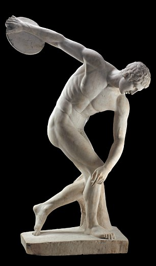
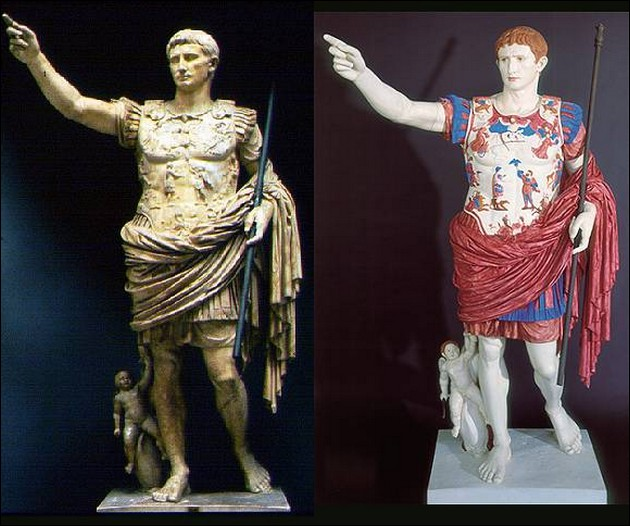

Greek statues were much more colorful than you think

When we think of Greek staues, we think of pure marble with no color, it gives this regal feeling with its abscence of color.
However, during the era of Greek art, these statues were much more colorful and bright.

These statues were full of color. The paint however, did not last the years and so only the marble sculpture remained.